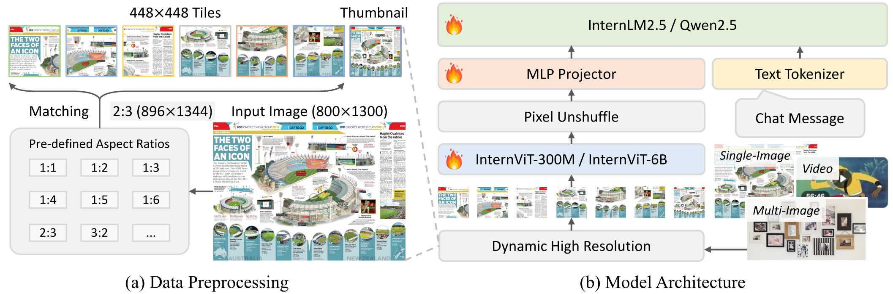

InternVL2.5: Expanding Performance Boundaries of Open-Source Multimodal Models with Model, Data, and Test-Time Scaling
[üÜï Go Back] [üìú InternVL 2.5 Report (üî•new) ] [üìú InternVL 1.0 Paper] [üìú InternVL 1.5 Paper] [üó®Ô∏è Chat Demo] [üìò Code] [üìñ Documents] [ü§ó HF Demo] [ ModelScope] [üöÄ
Quick Start] [üìñ ‰∏≠ÊñáËߣËت]
ModelScope] [üöÄ
Quick Start] [üìñ ‰∏≠ÊñáËߣËت]
| Type | Model | Date | HF Link | MS Link | Document |
|---|---|---|---|---|---|
| Multimodal Large Language Models | InternVL2.5-1B | 2024.12.05 | ü§ó link | ü§ñ link | üìñ doc |
| InternVL2.5-2B | 2024.12.05 | ü§ó link | ü§ñ link | üìñ doc | |
| InternVL2.5-4B | 2024.12.05 | ü§ó link | ü§ñ link | üìñ doc | |
| InternVL2.5-8B | 2024.12.05 | ü§ó link | ü§ñ link | üìñ doc | |
| InternVL2.5-26B | 2024.12.05 | ü§ó link | ü§ñ link | üìñ doc | |
| InternVL2.5-38B | 2024.12.05 | ü§ó link | ü§ñ link | üìñ doc | |
| InternVL2.5-78B | 2024.12.05 | ü§ó link | ü§ñ link | üìñ doc | |
| InternVL2.5-Pro | TODO | TODO | TODO | TODO | |
| Vision Foundation Model |
|
2024.12.05 | ü§ó link | ü§ñ link | üìñ doc |
|
|
2024.12.05 | ü§ó link | ü§ñ link | üìñ doc |
We introduce InternVL 2.5, an advanced multimodal large language model (MLLM) series that builds upon InternVL 2.0, maintaining its core model architecture while introducing significant enhancements in training and testing strategies as well as data quality. In this work, we delve into the relationship between model scaling and performance, systematically exploring the performance trends in vision encoders, language models, dataset sizes, and test-time configurations. Through extensive evaluations on a wide range of benchmarks, including multi-discipline reasoning, document understanding, multi-image / video understanding, real-world comprehension, multimodal hallucination detection, visual grounding, multilingual capabilities, and pure language processing, InternVL 2.5 exhibits competitive performance, rivaling leading commercial models such as GPT-4o and Claude-3.5-Sonnet. Notably, our model is the first open-source MLLMs to achieve over 70% on the MMMU benchmark. We hope this model contributes to the open-source community by setting new standards for developing and applying multimodal AI systems.
InternVL2.5 family is built upon the following designs:
- Progressive Scaling Strategy: We propose a progressive scaling strategy to efficiently align the vision encoder (e.g., InternViT) with LLMs. This strategy adopts a staged training approach, starting with smaller, resource-efficient LLMs and progressively scaling up to larger LLMs. This approach stems from our observation that even when the ViT and LLM are jointly trained using NTP loss, the resulting visual features are generalizable representations that can be easily understood by other LLMs. Specifically, the InternViT is trained alongside a smaller LLM (e.g., 20B), focusing on optimizing fundamental visual capabilities and cross-modal alignment. This phase avoids the high computational costs associated with training directly with a large LLM. Using a shared-weight mechanism, the trained InternViT can be seamlessly transferred to a larger LLM (e.g., 72B) without requiring retraining. Consequently, when training a larger model, much less data is required and the computation cost is significantly reduced.
- Improved Training Strategy: To enhance the model’s adaptability to real-world scenarios and overall performance, we introduce two key techniques: Random JPEG Compression and Loss Reweighting. For Random JPEG Compression, random JPEG compression with quality levels between 75 and 100 is applied to simulate the degradation commonly found in internet-sourced images. For Loss Reweighting, we express the widely applied strategies (i.e., token averaging and sample averaging) in a unified format and propose square averaging to balance the gradients biases towards long or short responses.
- Well-structed Data Organization: During model development, we observed that even a small fraction of anomalous samples can lead to aberrant model behavior during inference. To address this issue, we propose a filtering pipeline consisting of LLM-Based Quality Scoring and Rule-Based Filtering, which significantly reduced the occurrence of anomalous behaviors, particularly repetitive generation, with notable improvements in CoT reasoning tasks. Additionally, we implement a data-packing strategy to enhance GPU utilization and improve training efficiency, which comprises four steps: Select, Search, Pack, and Maintain.

Additionally, we systematically explore various factors in MLLMs, including how changes in vision encoders, language models, dataset sizes, and inference times affect the overall performance of the model, demonstrating the relationship between scaling and performance in multimodal models. Specifically, our conclusions are as follows:
- Large vision encoders significantly reduce the dependency on training data when scaling up MLLMs: Compared to Qwen2-VL-72B equipped with a 600M vision encoder, our InternVL2.5-78B with a 6B vision encoder can achieve better performance using only 1/10 of the training tokens. This greatly reduces the exploration cost when scaling up MLLMs.
- Data quality matters.: Upgrading InternVL from 2.0 to 2.5 doubled the dataset size, but strict filtering greatly improved quality. For example, we carefully excluded the training data with anomalous samples (e.g., repetitive patterns), achieving substantial improvements in Chain-of-Thought (CoT) reasoning tasks such as MMMU and complex challenges like the OlympiadBench. Note that, most existing open-source MLLMs tend to underperform when using CoT.
- Test-time scaling is beneficial for difficult multimodal QA: For challenging tasks such as MMMU, the InternVL2.5-78B with CoT reaches 70%, which is 4 points higher than the direct response. Subsequently, we have successfully verified that CoT can be further combined with majority voting and bring additional improvements.
Model Card
| Name | InternVL2.5-1B | InternVL2.5-2B | InternVL2.5-4B | InternVL2.5-8B | InternVL2.5-26B | InternVL2.5-38B | InternVL2.5-78B | ||
|---|---|---|---|---|---|---|---|---|---|
| Model Size | Total | 938.19M | 2.21B | 3.71B | 8.08B | 25.51B | 38.39B | 78.41B | |
| ViT | 304.01M | 304.01M | 304.01M | 304.01M | 5.54B | 5.54B | 5.54B | ||
| MLP | 4.48M | 12.60M | 12.60M | 33.57M | 116.43M | 91.79M | 172.01M | ||
| LLM | 629.70M | 2.21B | 3.40B | 7.74B | 19.86B | 32.76B | 72.70B | ||
| Resolution | dynamic resolution, max to 36 tiles of 448 × 448 in training, max to 128 tiles in testing. | ||||||||
|
|
Training Data | In this phase, we use a mixture of pre-training data sourced from Captioning, General Visual Question Answering, Science, Infographics, Charts, Mathematics, Knowledge, OCR, Documents, Grounding, and Conversation tasks. The data is formatted in a structured ChatML style and optimized using the NTP loss. For more detailed information on the data sources, please refer to our technical report. | |||||||
| Trainable Module | MLP |
(Optional) |
Training Data | We use the same training corpus as in Stage 1 for this phase, while unfreezing the parameters of ViT. The aim of this stage is to enhance the vision encoder's ability to extract visual features, allowing it to capture more comprehensive information, especially for domains that are relatively rare in web-scale datasets, including multilingual OCR data and mathematical charts, among others. The resulting vision models can be easily integrated with other LLMs at a significantly reduced computational cost by skipping this stage and relying solely on the training of Stage 1 and Stage 2. | |||||
| Trainable Module | ViT + MLP | ||||||||
|
|
Training Data | We curate a high-quality training dataset consisting of approximately 15 million samples. This dataset is drawn from diverse domains, including Captioning, General Visual Question Answering, Science, Charts, Mathematics, Knowledge, OCR, Documents, Grounding, and Conversation. Additionally, we incorporate a substantial amount of text-only data to preserve strong text-only performance. For detailed information on the data sources, please refer to our technical report. | |||||||
| Trainable Module | ViT + MLP + LLM | ||||||||
Performance
To comprehensively evaluate InternVL's performance on multimodal tasks, we employ a diverse set of benchmarks, including both well-established classic datasets and newly introduced ones provided by VLMEvalKit. These benchmarks span a wide range of categories, aiming to provide a thorough and balanced assessment of InternVL’s capabilities across various multimodal tasks. We provide the evaluation results in the tables behind. Please refer to our technical report for more details.
| Model Name | MMMU (val) |
MMMU (test) |
MMMU-Pro (std10/vision/overall) |
MathVista (mini) |
MathVision (mini/full) |
MathVerse (mini) |
Olympiad Bench |
|---|---|---|---|---|---|---|---|
| GPT-4V | 63.1 | - | - | 58.1 | - / 24.0 | 32.8 | 18.0 |
| GPT-4o-20240513 | 69.1 | - | 54.0 / 49.7 / 51.9 | 63.8 | - / 30.4 | 50.2 | 25.9 |
| Claude-3.5-Sonnet | 68.3 | - | 55.0 / 48.0 / 51.5 | 67.7 | - | - | - |
| Gemini-1.5-Pro | 62.2 | - | 49.4 / 44.4 / 46.9 | 63.9 | - / 19.2 | - | - |
| Qwen2-VL-2B | 41.1 | - | 25.3 / 17.2 / 21.2 | 43.0 | 19.7 / 12.4 | 21.0 | - |
| Qwen2-VL-7B | 54.1 | - | 34.1 / 27.0 / 30.5 | 58.2 | 22.0 / 16.3 | 31.9 | - |
| Qwen2-VL-72B | 64.5 | - | 49.2 / 43.3 / 46.2 | 70.5 | - / 25.9 | - | - |
| InternVL2.5-1B | 40.9 | 35.8 | 23.3 / 15.5 / 19.4 | 43.2 | 16.8 / 14.4 | 28.0 | 1.7 |
| InternVL2.5-2B | 43.6 | 38.2 | 27.3 / 20.1 / 23.7 | 51.3 | 13.5 / 14.7 | 30.6 | 2.0 |
| InternVL2.5-4B | 52.3 | 46.3 | 36.4 / 29.0 / 32.7 | 60.5 | 21.7 / 20.9 | 37.1 | 3.0 |
| InternVL2.5-8B | 56.0 | 48.9 | 38.2 / 30.4 / 34.3 | 64.4 | 22.0 / 19.7 | 39.5 | 4.9 |
| InternVL2.5-26B | 60.0 | 51.8 | 41.6 / 32.6 / 37.1 | 67.7 | 28.0 / 23.1 | 40.1 | 8.8 |
| InternVL2.5-38B | 63.9 | 57.6 | 48.0 / 44.0 / 46.0 | 71.9 | 32.2 / 31.8 | 49.4 | 12.1 |
| InternVL2.5-78B | 70.1 | 61.8 | 51.4 / 45.9 / 48.6 | 72.3 | 34.9 / 32.2 | 51.7 | 11.6 |
| Model Name | AI2D (w./wo Mask) |
ChartQA (test avg.) |
TextVQA (val) |
DocVQA (test) |
InfoVQA (test) |
OCR Bench |
SEED-2 Plus |
CharXiv (RQ/DQ) |
VCR-EN-Easy (EM/Jaccard) |
|---|---|---|---|---|---|---|---|---|---|
| GPT-4V | 78.2 / 89.4 | 78.5 | 78.0 | 88.4 | 75.1 | 645 | 53.8 | 37.1 / 79.9 | 52.0 / 65.4 |
| GPT-4o-20240513 | 84.6 / 94.2 | 85.7 | 77.4 | 92.8 | 79.2 | 736 | 72.0 | 47.1 / 84.5 | 91.6 / 96.4 |
| Claude-3-Opus | 70.6 / 88.1 | 80.8 | 67.5 | 89.3 | 55.6 | 694 | 44.2 | 30.2 / 71.6 | 62.0 / 77.7 |
| Claude-3.5-Sonnet | 81.2 / 94.7 | 90.8 | 74.1 | 95.2 | 74.3 | 788 | 71.7 | 60.2 / 84.3 | 63.9 / 74.7 |
| Gemini-1.5-Pro | 79.1 / 94.4 | 87.2 | 78.8 | 93.1 | 81.0 | 754 | - | 43.3 / 72.0 | 62.7 / 77.7 |
| Qwen2-VL-2B | 74.7 / 84.6 | 73.5 | 79.7 | 90.1 | 65.5 | 809 | 62.4 | - | 81.5 / - |
| Qwen2-VL-7B | 83.0 / 92.1 | 83.0 | 84.3 | 94.5 | 76.5 | 866 | 69.0 | - | 89.7 / 93.8 |
| Qwen2-VL-72B | 88.1 / - | 88.3 | 85.5 | 96.5 | 84.5 | 877 | - | - | 91.3 / 94.6 |
| InternVL2.5-1B | 69.3 / 77.8 | 75.9 | 72.0 | 84.8 | 56.0 | 785 | 59.0 | 19.0 / 38.4 | 91.5 / 97.0 |
| InternVL2.5-2B | 74.9 / 83.5 | 79.2 | 74.3 | 88.7 | 60.9 | 804 | 60.9 | 21.3 / 49.7 | 93.2 / 97.6 |
| InternVL2.5-4B | 81.4 / 90.5 | 84.0 | 76.8 | 91.6 | 72.1 | 828 | 66.9 | 24.9 / 61.7 | 93.7 / 97.8 |
| InternVL2.5-8B | 84.5 / 92.8 | 84.8 | 79.1 | 93.0 | 77.6 | 822 | 69.7 | 32.9 / 68.6 | 92.6 / 97.4 |
| InternVL2.5-26B | 86.4 / 94.4 | 87.2 | 82.4 | 94.0 | 79.8 | 852 | 70.8 | 35.9 / 73.5 | 94.4 / 98.0 |
| InternVL2.5-38B | 87.6 / 95.1 | 88.2 | 82.7 | 95.3 | 83.6 | 842 | 71.2 | 42.4 / 79.6 | 94.7 / 98.2 |
| InternVL2.5-78B | 89.1 / 95.7 | 88.3 | 83.4 | 95.1 | 84.1 | 854 | 71.3 | 42.4 / 82.3 | 95.7 / 94.5 |
| Model Name | BLINK (val) |
Mantis Eval |
MMIU | Muir Bench |
MMT (val) |
MIRB (avg) |
RealWorld QA |
MME-RW (EN) |
WildVision (win rate) |
R-Bench (dis) |
|---|---|---|---|---|---|---|---|---|---|---|
| GPT-4V | 54.6 | 62.7 | - | 62.3 | 64.3 | 53.1 | 61.4 | - | 71.8 | 65.6 |
| GPT-4o-20240513 | 68.0 | - | 55.7 | 68.0 | 65.4 | - | 75.4 | 45.2 | 80.6 | 77.7 |
| Claude-3.5-Sonnet | - | - | 53.4 | - | - | - | 60.1 | 51.6 | - | - |
| Gemini-1.5-Pro | - | - | 53.4 | - | 64.5 | - | 67.5 | 38.2 | - | - |
| Qwen2-VL-2B | 44.4 | - | - | - | 55.1 | - | 62.6 | - | - | - |
| Qwen2-VL-7B | 53.2 | - | - | - | 64.0 | - | 70.1 | 56.5 | - | 64.0 |
| Qwen2-VL-72B | - | - | - | - | 71.8 | - | 77.8 | - | - | - |
| InternVL2.5-1B | 42.0 | 51.2 | 38.5 | 29.9 | 50.3 | 35.6 | 57.5 | 44.2 | 43.4 | 59.0 |
| InternVL2.5-2B | 44.0 | 54.8 | 43.5 | 40.6 | 54.5 | 36.4 | 60.1 | 48.8 | 44.2 | 62.2 |
| InternVL2.5-4B | 50.8 | 62.7 | 43.8 | 45.2 | 62.4 | 51.7 | 64.3 | 55.3 | 49.4 | 66.1 |
| InternVL2.5-8B | 54.8 | 67.7 | 46.7 | 51.1 | 62.3 | 52.5 | 70.1 | 59.1 | 62.0 | 70.1 |
| InternVL2.5-26B | 61.8 | 75.6 | 49.4 | 61.1 | 66.9 | 55.7 | 74.5 | 61.8 | 65.2 | 72.9 |
| InternVL2.5-38B | 63.2 | 78.3 | 55.3 | 62.7 | 70.0 | 61.2 | 73.5 | 64.0 | 66.4 | 72.1 |
| InternVL2.5-78B | 63.8 | 77.0 | 55.8 | 63.5 | 70.8 | 61.1 | 78.7 | 62.9 | 71.4 | 77.2 |
| Model Name | MME (sum) |
MMB (EN/CN) |
MMBv1.1 (EN) |
MMVet (turbo) |
MMVetv2 (0613) |
MMStar | HallBench (avg.) |
MMHal (score) |
CRPE (relation) |
POPE (avg.) |
|---|---|---|---|---|---|---|---|---|---|---|
| GPT-4V | 1926.6 | 81.0 / 80.2 | 80.0 | 67.5 | 66.3 | 56.0 | 46.5 | - | - | - |
| GPT-4o-20240513 | - | 83.4 / 82.1 | 83.1 | 69.1 | 71.0 | 64.7 | 55.0 | 4.00 | 76.6 | 86.9 |
| Claude-3-Opus | 1586.8 | 63.3 / 59.2 | 60.1 | 51.7 | 55.8 | 45.7 | 37.8 | - | - | - |
| Claude-3.5-Sonnet | - | 82.6 / 83.5 | 80.9 | 70.1 | 71.8 | 65.1 | 55.5 | - | - | - |
| Gemini-1.5-Pro | - | 73.9 / 73.8 | 74.6 | 64.0 | 66.9 | 59.1 | 45.6 | - | - | - |
| Qwen2-VL-2B | 1872.0 | 74.9 / 73.5 | 72.2 | 49.5 | - | 48.0 | 41.7 | - | - | - |
| Qwen2-VL-7B | 2326.8 | 83.0 / 80.5 | 80.7 | 62.0 | - | 60.7 | 50.6 | 3.40 | 74.4 | 88.1 |
| Qwen2-VL-72B | 2482.7 | 86.5 / 86.6 | 85.9 | 74.0 | 66.9 | 68.3 | 58.1 | - | - | - |
| InternVL2.5-1B | 1950.5 | 70.7 / 66.3 | 68.4 | 48.8 | 43.2 | 50.1 | 39.0 | 2.49 | 60.9 | 89.9 |
| InternVL2.5-2B | 2138.2 | 74.7 / 71.9 | 72.2 | 60.8 | 52.3 | 53.7 | 42.6 | 2.94 | 70.2 | 90.6 |
| InternVL2.5-4B | 2337.5 | 81.1 / 79.3 | 79.3 | 60.6 | 55.4 | 58.3 | 46.3 | 3.31 | 75.5 | 90.9 |
| InternVL2.5-8B | 2344.1 | 84.6 / 82.6 | 83.2 | 62.8 | 58.1 | 62.8 | 50.1 | 3.65 | 78.4 | 90.6 |
| InternVL2.5-26B | 2373.3 | 85.4 / 85.5 | 84.2 | 65.0 | 60.8 | 66.5 | 55.0 | 3.70 | 79.1 | 90.6 |
| InternVL2.5-38B | 2455.8 | 86.5 / 86.3 | 85.5 | 68.8 | 62.1 | 67.9 | 56.8 | 3.71 | 78.3 | 90.7 |
| InternVL2.5-78B | 2494.5 | 88.3 / 88.5 | 87.4 | 72.3 | 65.5 | 69.5 | 57.4 | 3.89 | 78.8 | 90.8 |
| Model Name | RefCOCO | RefCOCO+ | RefCOCOg | Avg. | |||||
|---|---|---|---|---|---|---|---|---|---|
| val | test-A | test-B | val | test-A | test-B | val | test | ||
| Qwen2-VL-7B | 91.7 | 93.6 | 87.3 | 85.8 | 90.5 | 79.5 | 87.3 | 87.8 | 87.9 |
| Qwen2-VL-72B | 93.2 | 95.3 | 90.7 | 90.1 | 93.8 | 85.6 | 89.9 | 90.4 | 91.1 |
| InternVL2.5-8B | 90.3 | 94.5 | 85.9 | 85.2 | 91.5 | 78.8 | 86.7 | 87.6 | 87.6 |
| InternVL2.5-78B | 93.7 | 95.6 | 92.5 | 90.4 | 94.7 | 86.9 | 92.7 | 92.2 | 92.3 |
| Model Name | MMMB | Multilingual MMBench | MTVQA (avg.) |
||||||||||
|---|---|---|---|---|---|---|---|---|---|---|---|---|---|
| en | zh | pt | ar | tr | ru | en | zh | pt | ar | tr | ru | ||
| GPT-4V | 75.0 | 74.2 | 71.5 | 73.5 | 69.0 | 73.1 | 77.6 | 74.4 | 72.5 | 72.3 | 70.5 | 74.8 | 22.0 |
| GPT-4o | - | - | - | - | - | - | - | - | - | - | - | - | 27.8 |
| Qwen-VL-Max | 77.2 | 75.3 | 72.2 | 70.8 | 66.0 | 74.2 | 76.8 | 77.6 | 74.6 | 75.0 | 69.1 | 75.0 | - |
| Gemini-1.0-Pro | 75.0 | 71.9 | 70.6 | 69.9 | 69.6 | 72.7 | 73.6 | 72.1 | 70.3 | 61.1 | 69.8 | 70.5 | - |
| Qwen2-VL-2B | 78.3 | 74.2 | 72.6 | 68.3 | 61.8 | 72.8 | 72.1 | 71.1 | 69.9 | 61.1 | 54.4 | 69.3 | 20.0 |
| Qwen2-VL-7B | 83.9 | 82.4 | 81.2 | 79.0 | 74.7 | 82.4 | 81.8 | 81.6 | 79.1 | 75.6 | 74.5 | 79.3 | 25.6 |
| Qwen2-VL-72B | 86.8 | 85.3 | 85.2 | 84.8 | 84.2 | 85.3 | 86.9 | 87.2 | 85.8 | 83.5 | 84.4 | 85.3 | 30.9 |
| InternVL2.5-1B | 78.8 | 70.2 | 61.5 | 55.0 | 45.3 | 61.1 | 72.5 | 64.7 | 57.0 | 43.0 | 37.8 | 53.2 | 21.4 |
| InternVL2.5-2B | 81.4 | 74.4 | 58.2 | 48.3 | 46.4 | 53.2 | 76.5 | 71.6 | 55.9 | 37.3 | 33.9 | 44.8 | 21.8 |
| InternVL2.5-4B | 83.7 | 81.0 | 79.7 | 76.0 | 70.5 | 79.9 | 82.3 | 81.1 | 78.9 | 73.4 | 68.1 | 76.2 | 28.4 |
| InternVL2.5-8B | 84.3 | 83.1 | 78.6 | 69.3 | 71.5 | 79.5 | 83.8 | 83.2 | 79.4 | 64.3 | 67.8 | 77.3 | 27.6 |
| InternVL2.5-26B | 86.2 | 83.8 | 81.6 | 73.3 | 73.7 | 82.8 | 86.1 | 85.5 | 80.7 | 67.5 | 75.0 | 79.6 | 28.5 |
| InternVL2.5-38B | 86.4 | 85.1 | 84.1 | 84.3 | 82.8 | 84.9 | 87.5 | 88.6 | 85.3 | 84.5 | 84.0 | 85.9 | 31.7 |
| InternVL2.5-78B | 86.3 | 85.6 | 85.1 | 84.8 | 83.1 | 85.4 | 90.0 | 89.7 | 87.4 | 83.3 | 84.9 | 86.3 | 31.9 |
| Model Name | Video-MME (wo/w. sub.) |
MVBench | MMBench-Video | MLVU (M-Avg) |
LongVideoBench (val total) |
CG-Bench v1.1 (long/clue acc.) |
|---|---|---|---|---|---|---|
| GPT-4V/4T | 59.9 / 63.3 | 43.7 | 1.53 | 49.2 | 59.1 | - |
| GPT-4o-20240513 | 71.9 / 77.2 | - | 1.63 | 64.6 | 66.7 | - |
| GPT-4o-20240806 | - | - | 1.87 | - | - | 41.8 / 56.4 |
| Gemini-1.5-Pro | 75.0 / 81.3 | - | 1.30 | - | 64.0 | 40.1 / 56.4 |
| Qwen2-VL-2B | 55.6 / 60.4 | 63.2 | - | - | - | - |
| Qwen2-VL-7B | 63.3 / 69.0 | 67.0 | 1.44 | - | 55.6 | - |
| Qwen2-VL-72B | 71.2 / 77.8 | 73.6 | 1.70 | - | - | 41.3 / 56.2 |
| InternVL2.5-1B | 50.3 / 52.3 | 64.3 | 1.36 | 57.3 | 47.9 | - |
| InternVL2.5-2B | 51.9 / 54.1 | 68.8 | 1.44 | 61.4 | 52.0 | - |
| InternVL2.5-4B | 62.3 / 63.6 | 71.6 | 1.73 | 68.3 | 55.2 | - |
| InternVL2.5-8B | 64.2 / 66.9 | 72.0 | 1.68 | 68.9 | 60.0 | - |
| InternVL2.5-26B | 66.9 / 69.2 | 75.2 | 1.86 | 72.3 | 59.9 | - |
| InternVL2.5-38B | 70.7 / 73.1 | 74.4 | 1.82 | 75.3 | 63.3 | - |
| InternVL2.5-78B | 72.1 / 74.0 | 76.4 | 1.97 | 75.7 | 63.6 | 42.2 / 58.5 |
Citation
@article{chen2023internvl,
title={InternVL: Scaling up Vision Foundation Models and Aligning for Generic Visual-Linguistic Tasks},
author={Chen, Zhe and Wu, Jiannan and Wang, Wenhai and Su, Weijie and Chen, Guo and Xing, Sen and Zhong, Muyan and Zhang, Qinglong and Zhu, Xizhou and Lu, Lewei and Li, Bin and Luo, Ping and Lu, Tong and Qiao, Yu and Dai, Jifeng},
journal={arXiv preprint arXiv:2312.14238},
year={2023}
}
@article{chen2024far,
title={How Far Are We to GPT-4V? Closing the Gap to Commercial Multimodal Models with Open-Source Suites},
author={Chen, Zhe and Wang, Weiyun and Tian, Hao and Ye, Shenglong and Gao, Zhangwei and Cui, Erfei and Tong, Wenwen and Hu, Kongzhi and Luo, Jiapeng and Ma, Zheng and others},
journal={arXiv preprint arXiv:2404.16821},
year={2024}
}